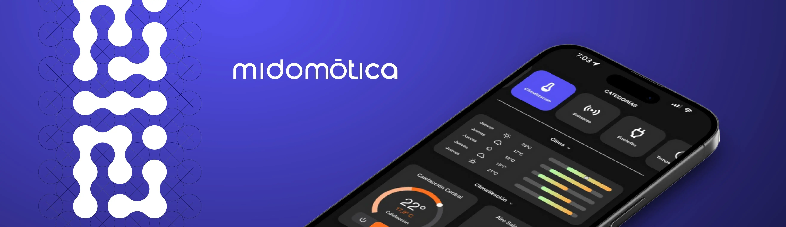
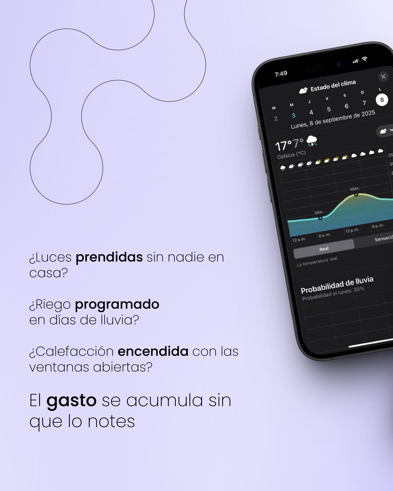
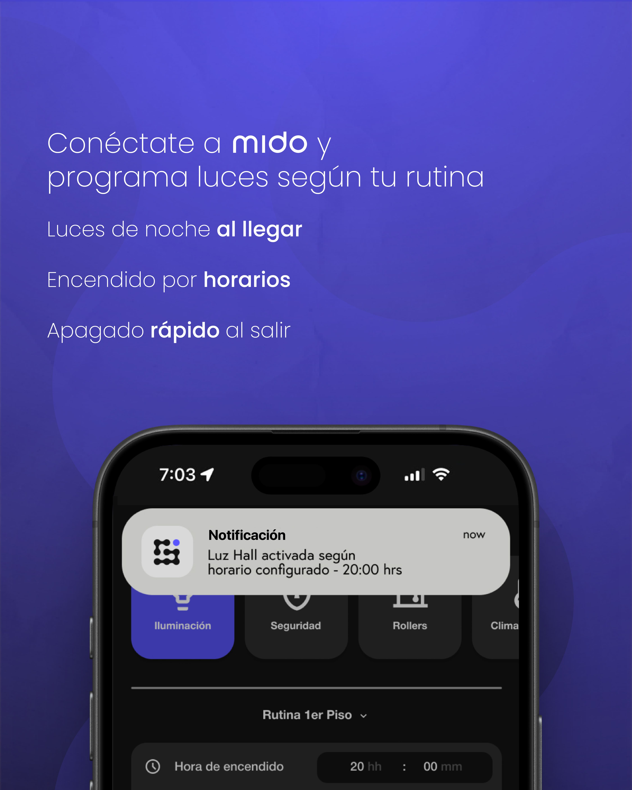
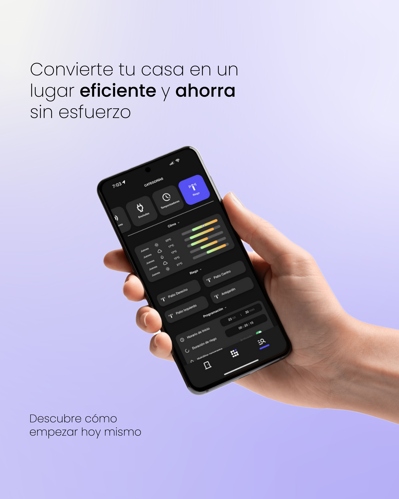
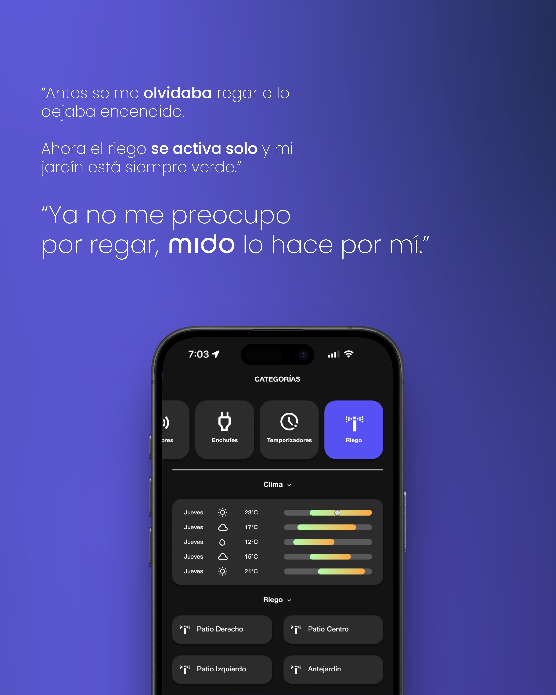
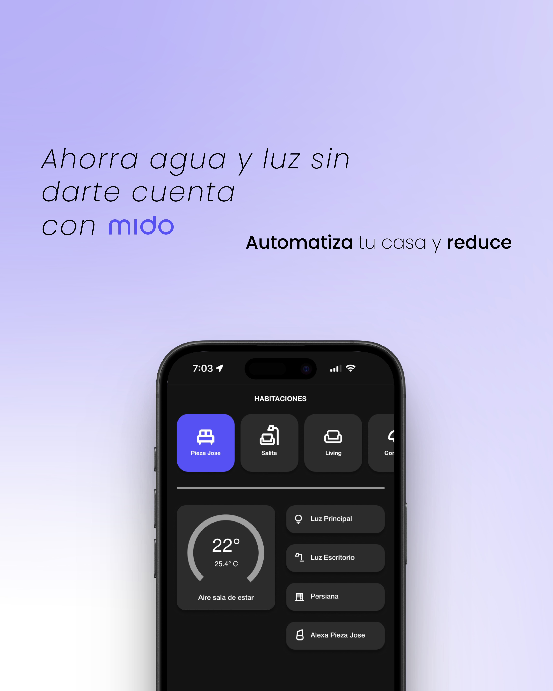
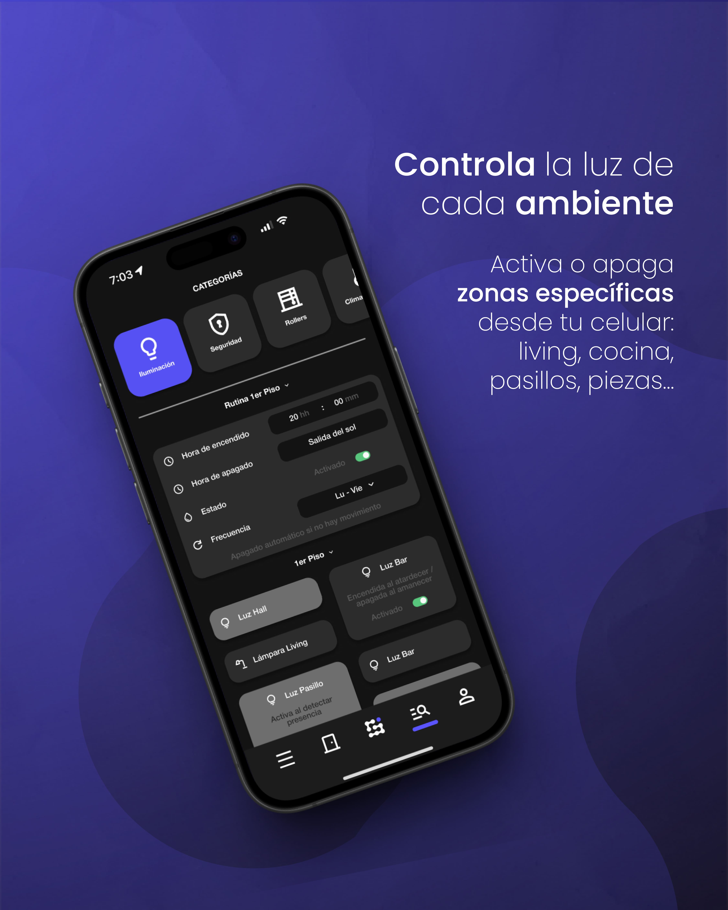

Sistema de domótica diseñado para transformar la manera en que las personas
se conectan con sus hogares

Sistema de domótica para
hogares e inmobiliarias
2024–2025
Branding, UI/UX Design,
UI Design, Prototyping
Figma, Illustrator, Photoshop
En un escenario donde la vida cotidiana depende cada vez más de la tecnología, los hogares modernos exigen soluciones accesibles, intuitivas y capaces de mejorar la seguridad, la eficiencia y el confort. Sin embargo, muchos sistemas de domótica actuales son complejos de instalar, difíciles de usar o poco amigables para quienes no están familiarizados con la tecnología.
A partir de este escenario surge Mido, un proyecto que propone una experiencia de control del hogar simple, estética y centrada en las necesidades reales de las personas.
El proyecto se desarrolló bajo el concepto de conexión, entendido tanto como vínculo emocional con el hogar como conexión tecnológica entre dispositivos. El diseño debía ser mínimal, contemporáneo y fácilmente reconocible, reflejando orden, simplicidad y precisión.
Mi rol consistió en: Definir la identidad visual general del proyecto. Diseñar el sistema de iconografía, color y componentes digitales. Crear prototipos funcionales de la app. Desarrollar la arquitectura visual del dashboard principal. Diseñar flujos de interacción claros, accesibles y sin fricción. El objetivo fue que cualquier persona (sin importar su nivel tecnológico) pudiera entender y usar Mido sin instrucciones adicionales.






El proyecto consolida una propuesta de domótica accesible, estética y centrada en las personas. El diseño permitió demostrar cómo la tecnología puede mejorar la vida diaria sin complejidad innecesaria, manteniendo una narrativa visual coherente, moderna y alineada con estándares actuales de interfaces inteligentes.